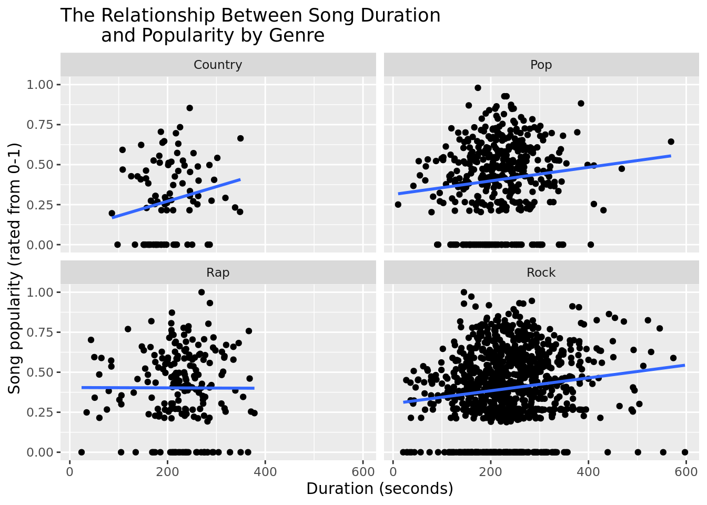

The source of this data is the Million Song Dataset [1]. The National Science Foundation’s project IIS-0713334 funded the Million Song Dataset with a grant. There were several curators for this dataset—the Million Song Dataset used a company called the Echo Nest to derive global data points about one million contemporary songs. It was also a collaboration between the Echo Nest and LabROSA (laboratory working towards intelligent machine listening). It was collected in 2011. There are 10,000 observations with different songs associated by a song ID and their respective artists that also have an artist ID. Every observation is also defined by several variables such as artist familiarity (the extent to which an artist’s listeners are familiar with an artist’s music), song tempo, song duration, year of a song’s release, and many more. It is important to note that there are no audios in this dataset, only the derived features.
Introduction and data
The source of this data is the Million Song Dataset. The National Science Foundation’s project IIS-0713334 funded the Million Song Dataset with a grant. There were several curators for this dataset; the Million Song Dataset used a company called the Echo Nest to derive global data points about one million contemporary songs. It was also a collaboration between the Echo Nest and LabROSA (laboratory working towards intelligent machine listening). It was collected in 2011. There are 10,000 observations with different songs associated by a song ID and their respective artists that also have an artist ID. Every observation is also defined by several variables such as artist familiarity, song loudness, song tempo, and many more. Note that there are no audios in this dataset, only the derived features. Note that there are also no ethical concerns, as no personal data was collected for this dataset.
Previous literature exists about the topic. “Prediction of product success: explaining song popularity by audio features from Spotify data” attempts to explore the relation between song attributes such as tempo and key signature, as well as the number of plays on Spotify, the popular music-streaming platform. This paper uses a dataset of 1000 songs to investigate this question. Ultimately, the researchers find that there is only a fairly limited relation between song popularity (measured in stream count) and song features. In particular, the paper finds that tempo, which is the variable that we are most interested in, has no significant relation to stream count. Our research question builds on this article because we are similarly looking into audio features (like tempo) that make songs more popular but going further to see if a relation can be found conditional upon the genre (not an audio feature) associated with the artist a song.
[2] Nijkamp, R. (2018). Prediction of product success: explaining song popularity by audio features from Spotify data (Bachelor’s thesis, University of Twente). http://essay.utwente.nl/75422/1/NIJKAMP_BA_IBA.pdf
Research Question and Hypotheses
Given a genre (Rock, Pop, Rap, or Country, chosen for their sizable amount of observations within the data set), associated with an artist (artist.terms), how are the different song attributes (such as song.tempo, song.duration, artist.familiarity, song.year) related to song popularity (song.hotttnesss)? Do these relationships differ for artists associated with different genres?
We predict that rock and pop songs will have a strong positive relationship between tempo and popularity and that rap and country will still have a positive relationship, but not a strong one. We also predict that there will be a positive relation between year and popularity, since we expect more recent songs to be more popular; we predict that this correlation will be the strongest of the four that we investigate. We hypothesize that artist familiarity will also be positively correlated with song popularity. We do not predict the relationship between different song attributes and song popularity will differ for artists associated with different genres.
Rows: 10000 Columns: 35
── Column specification ────────────────────────────────────────────────────────
Delimiter: ","
chr (4): artist.id, artist.name, artist.terms, song.id
dbl (31): artist.familiarity, artist.hotttnesss, artist.latitude, artist.loc...
ℹ Use `spec()` to retrieve the full column specification for this data.
ℹ Specify the column types or set `show_col_types = FALSE` to quiet this message.
# keep only genres of interestmusic_filter <- music |>filter(str_detect(artist.terms, "rock") |str_detect(artist.terms, "rap") |str_detect(artist.terms, "pop") |str_detect(artist.terms, "country"))# create dummy variables for each genremusic_filter$rock_genre <-if_else(grepl("rock", music_filter$artist.terms), # [3], see citation"rock", "not rock")music_filter$rap_genre <-if_else(grepl("rap", music_filter$artist.terms), "rap", "not rap")music_filter$pop_genre <-if_else(grepl("pop", music_filter$artist.terms), "pop", "not pop")music_filter$country_genre <-if_else(grepl("country", music_filter$artist.terms), "country", "not country")# use dummy variables to get rid of sub-genres in artist.terms # this is done so we can facet_wrap our visualizations later# we also keep only observations with songgg.hotttness >= 0,# since negative song popularity should be on a scale from 0 to 1, as definedmusic_filter <- music_filter |>filter(song.hotttnesss >=0) |>mutate(artist.terms =if_else(rock_genre =="rock", "Rock",if_else(rap_genre =="rap", "Rap",if_else(pop_genre =="pop", "Pop",if_else(country_genre =="country", "Country", "")))))
Visualizations
Next, we plot linear regressions visually over a scatterplot to show the relation between four different song attributes (listed in our research question) and song popularity by our four genres of interest. We do this to get a general sense of how the song attributes might predict song popularity, which will help us answer our research question of how much each song attribute is correlated with a song’s popularity.
music_filter |>ggplot(aes(x = song.tempo, y = song.hotttnesss)) +geom_point() +geom_smooth(method = lm, se = F) +facet_wrap(~ artist.terms) +labs(x ="Tempo (BPM)", y ="Song popularity (rated from 0-1)",title ="The Relationship Between Song Tempo and Popularity by Genre")
`geom_smooth()` using formula = 'y ~ x'
All of the genres have a positive relationship with song tempo except for rap which has a negative relationship. Thus, we predict that faster songs are on average more popular.
music_filter |>filter(song.duration <600) |>ggplot(aes(x = song.duration, y = song.hotttnesss)) +geom_point() +geom_smooth(method = lm, se = F) +facet_wrap(~ artist.terms) +labs(x ="Duration (seconds)", y ="Song popularity (rated from 0-1)",title ="The Relationship Between Song Duration and Popularity by Genre")
`geom_smooth()` using formula = 'y ~ x'

We filtered for songs under 10 minutes because there were several outliers which made visualization difficult; omitting these allow our visualizations to be much more easy to interpret. For rap, there was no relation on average between duration and popularity as the linear fit line was flat. For the other three genres, there was a positive relationship between duration and popularity. Thus, we predict that longer songs are on average more popular for country, pop and rock.
music_filter |>ggplot(aes(x = artist.familiarity, y = song.hotttnesss)) +geom_point() +geom_smooth(method = lm, se = F) +facet_wrap(~ artist.terms) +labs(x ="Familiarity (0-1 scale)", y ="Song popularity (rated from 0-1)",title ="The Relationship Between Artist Familiarity and Popularity by Genre")
`geom_smooth()` using formula = 'y ~ x'
Based on our linear models, there is a positive relationship between artist familiarity and song popularity for all four genres. Thus, we predict that songs by artists that listeners are more familiar with are more popular.
music_filter |>filter(song.year >0) |>ggplot(aes(x = song.year, y = song.hotttnesss)) +geom_point() +geom_smooth(method = lm, se = F) +facet_wrap(~ artist.terms) +labs(x ="Year", y ="Song popularity (rated from 0-1)",title ="The Relationship Between Song Year and Popularity by Genre")
`geom_smooth()` using formula = 'y ~ x'
For song year and popularity, visually there appears to be a weak positive relationship for all genres except rap which has a negative correlation. Thus, we predict that for country, pop and rock the more recent the song was released the more popular it is on average. For rap, older songs on average appear to be more popular.
Interactive models and goodness of fit
Finally, we run interactive regression models to measure the interactive effect between artist.terms (genre associated with an artist) and respective song attributes on song popularity (song.hotttnesss). We believe that an interactive model is useful in answering our research question because we are interested in the extent to which different song attributes predict song popularity, based on the genre associated with the artist. We have decided to not use an additive model since this would only be able to tell us the estimated average impact of changes in song attributes on song popularity, holding genre constant. This clearly does not answer our research question, since we are interested in how the relation between song attributes and song popularity change (or do not change).
Thus, we are using an interactive model, in particular to answer the second part of our research question (“Do these relationships differ for artists associated with different genres?”). The predictions made by our interactive model can then be broken down into the different predicted effects for each genre, which directly helps us answer our research question. Additionally, we are able to calculate the AIC and adjusted R-squared value of each model to determine which model is the greatest fit, and which model may possibly have the most significant predictive power, which further answers our question on the extent to which different song attributes predict song popularity.
Interactive model with artist.terms and song.tempo as explanatory variables:
Note that we filter out all songs with song.year = 0 so that we do not have incorrect data that skews our results. From the above regression, we are getting the following estimations for each genre (where Country is our “baseline” genre):
It is difficult to compare the estimated effects of the different song attributes on song popularity simply by comparing the sizes of our estimated coefficients, due to the difference in units of our song attributes. Thus, to answer the portion of our research question which asks “how are the different song attributes related to song popularity”, we feel it is more useful to assess which model has the best fit.
Based on our interaction models and the AIC and adjusted R-squared values, artist familiarity and song popularity had the lowest AIC as well as the highest adjust R-squared, making it the best fit model of our song attributes. So, based on AIC, how familiar a listener is with an artist on average (artist.familiarity) has the strongest correlation to popularity, meaning it is the best fit predictor of song popularity out of the four song attributes that we investigate. This is reflected visually in our visualizations above, in which the scatterplots and linear regressions generated for the relation between artist familiarity and song popularity had the lowest visible spread of observations compared to our other visualizations. Hence, our hypothesis about which relation will have the strongest correlation was not supported by our data, since we predicted the strongest correlation to exist between year and song popularity, instead of artist familiarity and song popularity.
Our interaction models can be used to answer the second part of our research question, where we ask “Do these relationships differ for artists associated with different genres?” We can see that for the relation between song tempo and song popularity, all of the genres exhibit a positive relationship except for rap which has a negative relationship. Our hypothesis about song tempo being positively correlated for all genres is thus incorrect. However, we were right to an extent in that the largest (not in absolute value) coefficients were associated with the genres of rock and pop.
Additionally, country and song duration have a positive relation between song duration and song popularity, while pop and rap have negative relationships, though our observed coefficients are so close to 0 that it is not unreasonable to assert that there was little relation found song duration and popularity for any of our genres. Moreover, we found a sizeable positive relation between artist familiarity and song popularity for every genre, though rock had the highest estimated coefficient.
Finally, our hypothesis that more recent songs are on average more popular is supported by our data for all genres other than rap, where we see a negative relation between year and song popularity, suggesting that older (perhaps more “classic”) songs are on average more popular among listeners. The above results can also be seen visually in our visualizations, which are doing something very similar to an interactive model by facet_wrap’ing by genre. From our results, it is clear that our hypothesis that the direction of relationships will not differ by genre is not supported.
From our study of the Million Songs Dataset, we find that there is little to no relation between song duration and song popularity, and that the relationship between song tempo and song popularity, and year that a song is released and song popularity, is positive for some genres but negative for others. We found that only the relationship between artist familiarity and song popularity is consistently positive across all genres, though we did find that this relationship was strongest for the genre of rock. Additionally, the model between artist familarity and song popularity was our best fit model, whereas the model between song duration and song popularity was our weakest.
[2] Nijkamp, R. (2018). Prediction of product success: explaining song popularity by audio features from Spotify data (Bachelor’s thesis, University of Twente). http://essay.utwente.nl/75422/1/NIJKAMP_BA_IBA.pdf